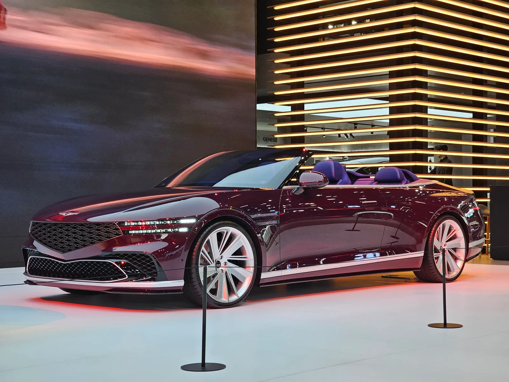
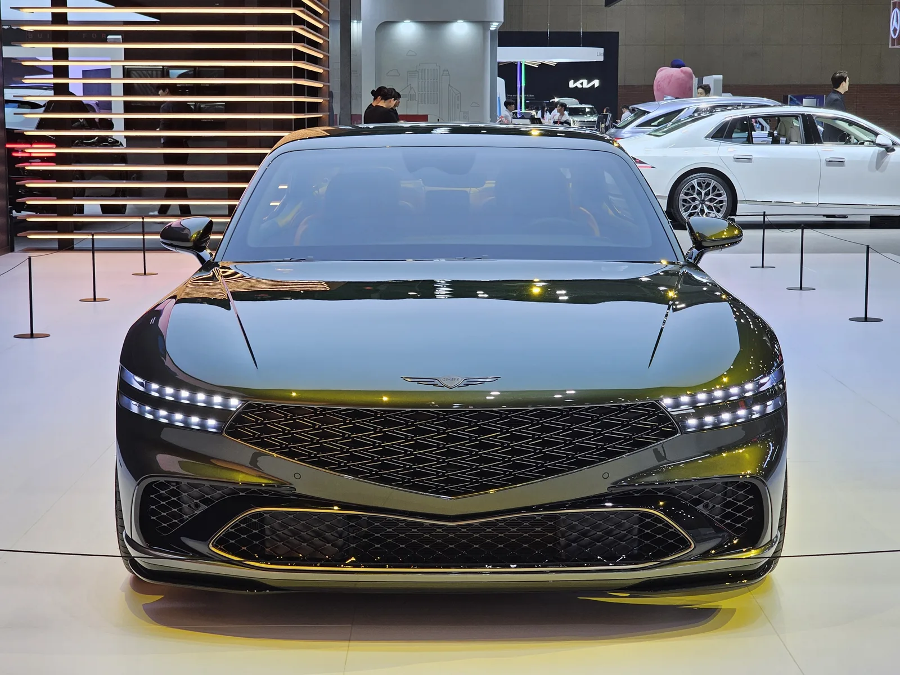
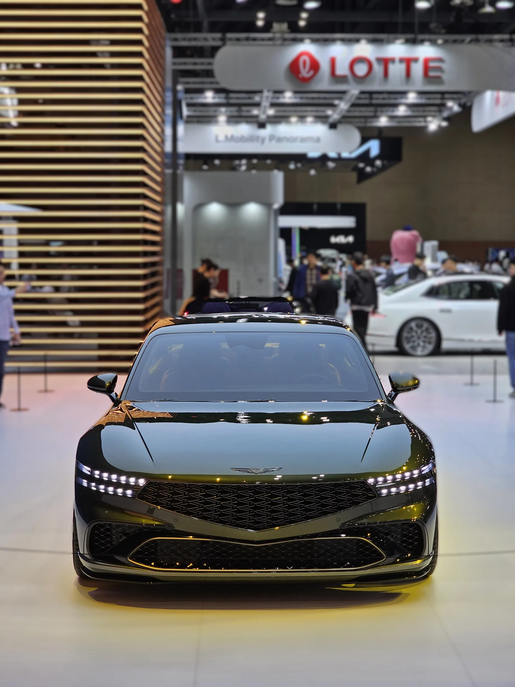
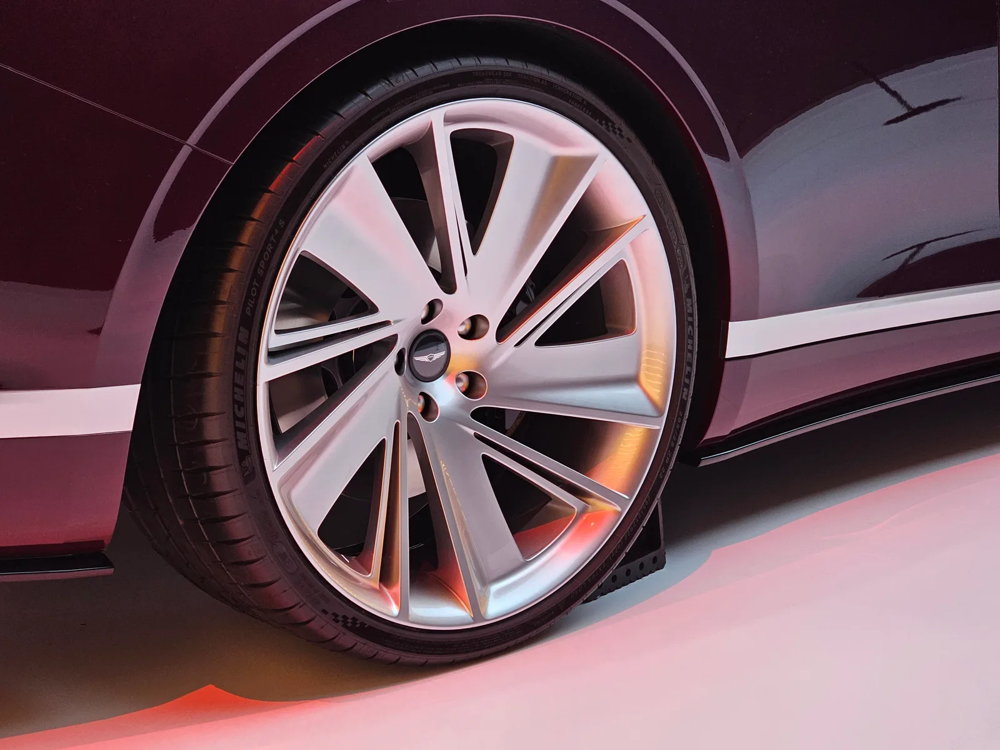

▲ 2025 서울 모빌리티쇼에서 처음 공개된 제네시스 X 그란 컨버터블 콘셉트 — 최근 미국에서 디자인 특허가 등록됐다 ⓒ Wikimedia Commons
콘셉트카로만 남을 줄 알았던 차가 미국 특허청 서류에 다시 등장했다. 제네시스가 지난해 서울 모빌리티쇼에서 선보인 2도어 콘셉트 'X 그란 쿠페'와 'X 그란 컨버터블'이 최근 미국에서 정식 디자인 특허를 획득한 사실이 확인됐다. 콘셉트카 단계에서 그치지 않고 실제 양산으로 이어질 수 있다는 관측에 힘이 실리는 이유다.
1. 무엇이 등록됐나 — 특허 번호와 날짜
이번에 확인된 것은 기술 특허가 아니라 '디자인 특허'다. 차량의 기능이 아니라 외관 형상 자체를 보호하는 절차로, 완성차 업체가 양산을 앞두고 디자인을 지키기 위해 흔히 활용하는 방식이다.
| 모델 | 특허 번호 | 등록일 |
|---|---|---|
| X 그란 쿠페 | US D1,144,037 S | 2026년 8월 25일 |
| X 그란 컨버터블 | US D1,138,892 S | 2026년 8월 4일 |
두 특허 모두 2025년 3월 19일 한국 특허 출원을 우선권으로 두고, 같은 해 7월 29일 미국에 정식 출원됐다. 콘셉트카가 서울 모빌리티쇼에서 공개된 지 얼마 지나지 않은 시점에 이미 해외 디자인 보호 절차에 들어갔다는 뜻으로, 단순 전시용 콘셉트치고는 이례적으로 빠른 움직임이라는 평가가 나온다.
📍 디자인 특허가 곧 양산 확정을 의미하지는 않는다
완성차 업체는 실제 출시 계획이 없는 콘셉트 디자인도 무단 도용을 막기 위해 특허로 등록해두는 경우가 많다. 다만 세계 주요 시장인 미국에까지 별도로 출원해 등록을 마쳤다는 점은, 최소한 해당 디자인 언어를 향후 다른 모델에 활용하거나 파생 양산차로 발전시킬 가능성을 열어둔 조치로 해석하는 시각이 많다.
2. 콘셉트의 원형 — 2025 서울 모빌리티쇼와 G90 트릴로지

▲ 2025 서울 모빌리티쇼에서 세계 최초 공개된 X 그란 쿠페 콘셉트 — 플래그십 세단 G90를 기반으로 한 2도어 파생 모델이다 ⓒ Wikimedia Commons
X 그란 쿠페와 X 그란 컨버터블은 2025년 4월 킨텍스에서 열린 서울 모빌리티쇼에서 나란히 세계 최초로 공개됐다. 제네시스 출범 10주년을 맞아 "새로운 10년을 위한 발판"이라는 주제로 선보인 두 콘셉트는, 브랜드 플래그십 세단인 G90의 아키텍처를 기반으로 한 2도어 파생 모델이다. 제네시스 디자인팀은 이를 G90의 '스포티함'과 '개방감 있는 우아함'이라는 두 가지 측면을 각각 극단으로 밀어붙인 결과물로 설명했다.
두 모델 모두 제네시스의 상징인 투 라인(Two Lines) LED 램프와 다이아몬드 메시 패턴의 크레스트 그릴을 유지하면서, 급격하게 경사진 윈드스크린과 낮춘 루프라인, 넓힌 펜더로 기존 세단과는 확연히 다른 실루엣을 완성했다. 지중해 지역에서 영감을 받은 색상과 소재도 특징으로, X 그란 쿠페는 올리브나무와 대지색 계열을, X 그란 컨버터블은 이탈리아산 슈퍼 투스칸 와인을 연상시키는 짙은 버건디 색상을 사용했다.
3. 특허 도면이 말해주는 것 — 배기구, 그리고 파워트레인의 변화

▲ 실내 콘셉트를 거의 그대로 살린 프론트 디자인 — 특허 도면에는 여기에 더해 후면 듀얼 배기구가 새롭게 그려졌다 ⓒ Wikimedia Commons
외신들이 특히 주목한 부분은 후면 디퓨저에 그려진 듀얼 배기구다. 앞서 2021년 공개된 초대 제네시스 X 콘셉트나 2022년 공개된 X 컨버터블 콘셉트는 모두 순수 전기 구동계를 전제로 한 모델이었다. 반면 이번 X 그란 쿠페·컨버터블 특허 도면에는 하부 디퓨저에 통합된 배기구 형상이 뚜렷하게 표현돼 있어, 내연기관 또는 고성능 하이브리드 파워트레인을 염두에 뒀을 가능성이 제기된다.
업계에서는 이를 현대차그룹이 최근 강조해온 고성능 서브 브랜드 '매그마(Magma)' 전략과 연결 짓는 시각도 있다. 순수 전동화 라인업과는 별도로, 내연·하이브리드 기반의 고성능·고급 모델 라인을 함께 육성하겠다는 방향성과 맞닿아 있다는 것이다. 다만 제네시스는 아직 두 콘셉트의 실제 양산 여부나 파워트레인 계획을 공식적으로 밝히지 않고 있다.
4. "벤틀리·애스턴마틴 겨냥"이라는 관측이 나오는 이유

▲ X 그란 컨버터블의 휠과 차체 디테일 — 완성도 높은 마감은 콘셉트 단계를 넘어선 양산 가능성 논의로 이어졌다 ⓒ Wikimedia Commons
보도를 종합하면 이번 특허 등록이 주목받는 배경에는 럭셔리 2도어 그랜드 투어러(GT) 시장의 공백이 있다. BMW 8시리즈와 렉서스 LC가 잇달아 단종되면서, 대형 세단을 기반으로 한 고급 2도어 쿠페·컨버터블 선택지 자체가 눈에 띄게 줄어든 상황이다. 현재 이 체급에서 실질적인 경쟁 모델로 꼽히는 건 벤틀리 컨티넨탈 GT와 애스턴마틴 DB12 정도가 거의 유일하다.
✅ 왜 지금 이 시장이 주목받나
· BMW 8시리즈, 렉서스 LC 등 기존 경쟁 모델 단종으로 선택지 감소
· 벤틀리 컨티넨탈 GT·애스턴마틴 DB12는 2억~3억원대 초고가 브랜드 전유물
· 제네시스는 G90 기반 플랫폼으로 상대적으로 접근 가능한 가격대 공략 가능
· 특허 도면의 내연·하이브리드 배기구 구성도 그랜드 투어러 성격과 부합
제네시스 뉴스룸에서 X 그란 쿠페·컨버터블 콘셉트 공개 당시 자료를 직접 확인할 수 있다. 제네시스 뉴스룸 바로가기
5. 경쟁 구도로 보는 럭셔리 2도어 GT 시장
아직 제네시스가 실제 양산가나 파워트레인 스펙을 공개하지 않은 만큼, 정확한 비교는 이르다. 다만 현재 시장에 남아 있는 대표 경쟁 모델의 성격을 짚어보면 제네시스가 어떤 포지션을 노릴 수 있는지 가늠해볼 수 있다.
| 모델 | 성격 | 파워트레인(참고) |
|---|---|---|
| 벤틀리 컨티넨탈 GT | 4인승 그랜드 투어러, 정통 럭셔리 지향의 묵직한 승차감 | 4.0L 트윈터보 V8 플러그인 하이브리드 (약 671마력) |
| 애스턴마틴 DB12 | 드라이버 중심의 스포티한 2+2 쿠페, 더 가벼운 차체 | 4.0L 트윈터보 V8 (약 671마력) |
| 제네시스 X 그란 쿠페·컨버터블(콘셉트 기준) | G90 기반, 지중해 감성의 우아한 2도어 디자인 | 미공개 — 특허 도면상 내연·하이브리드 배기구 확인 |
📍 가격이 관건이 될 전망
벤틀리 컨티넨탈 GT와 애스턴마틴 DB12는 각각 2억원대 후반~3억원대에 형성돼 있는 초고가 모델이다. 제네시스가 G90 기반 플랫폼을 활용해 이보다 낮은 가격대에 유사한 형태의 2도어 럭셔리 모델을 내놓을 수 있다면, 가격 대비 만족도를 앞세워 시장 공백을 파고드는 전략이 가능하다는 관측이 나온다. 다만 이는 어디까지나 특허 등록 시점의 추측이며, 실제 양산 계획이 확정된 것은 아니다.
6. 요약
제네시스의 2도어 콘셉트카 'X 그란 쿠페'와 'X 그란 컨버터블'이 최근 미국에서 정식 디자인 특허를 획득했다. 각각 US D1,144,037 S(8월 25일), US D1,138,892 S(8월 4일)로 등록됐으며, 2025년 3월 한국 우선권 출원을 거쳐 같은 해 7월 미국에 출원된 것으로 확인됐다.
두 콘셉트는 2025 서울 모빌리티쇼에서 G90 기반 파생 모델로 처음 공개됐고, 이번 특허 도면에는 이전 순수 전기 콘셉트와 달리 듀얼 배기구가 새롭게 그려져 내연·하이브리드 파워트레인 탑재 가능성이 제기된다. BMW 8시리즈·렉서스 LC 단종으로 선택지가 줄어든 럭셔리 2도어 GT 시장에서, 벤틀리 컨티넨탈 GT·애스턴마틴 DB12를 겨냥한 것 아니냐는 관측도 함께 나온다.
다만 디자인 특허 등록이 곧 양산 확정을 의미하지는 않는다. 제네시스는 아직 양산 여부나 파워트레인, 출시 시점을 공식화하지 않았으며, 구체적인 계획은 추가 발표를 지켜봐야 확인할 수 있다.